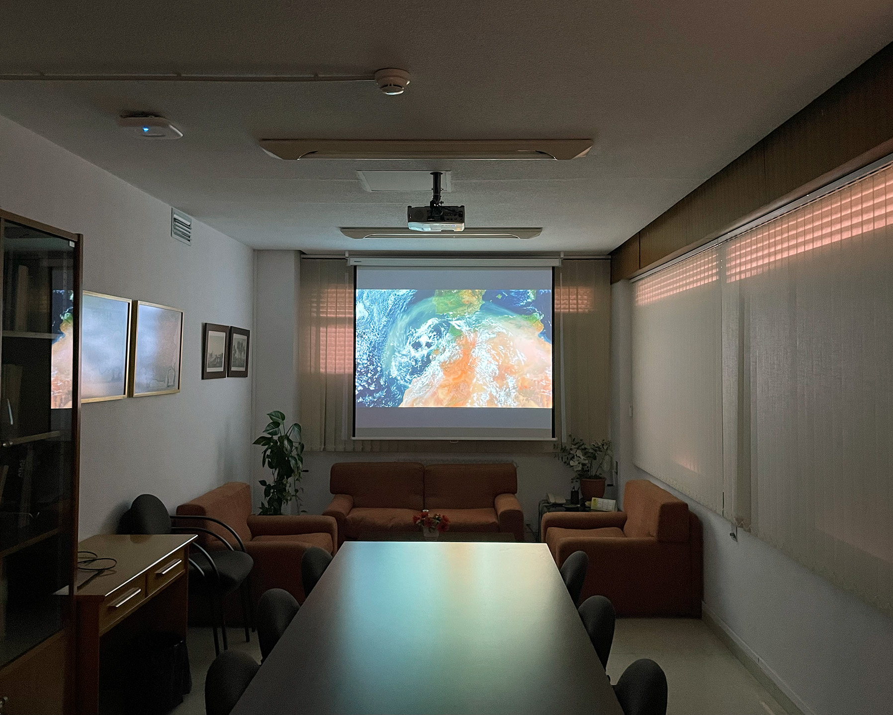
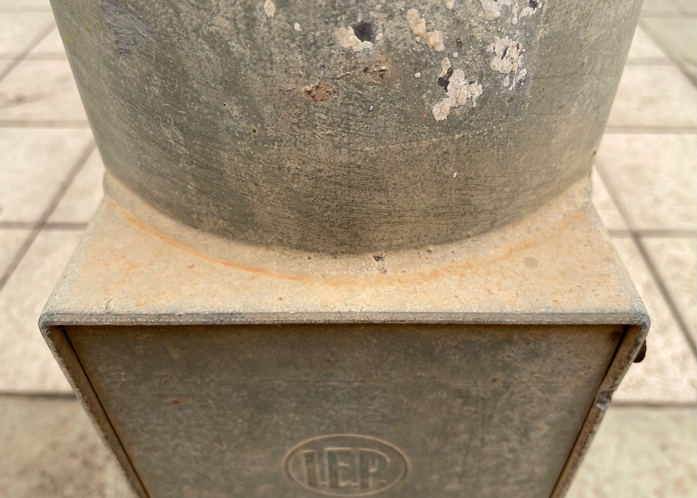
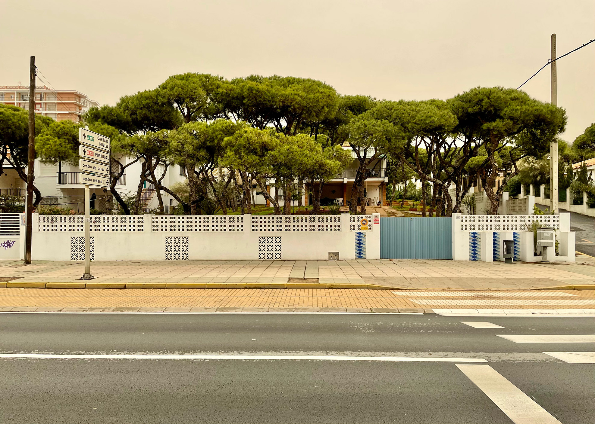
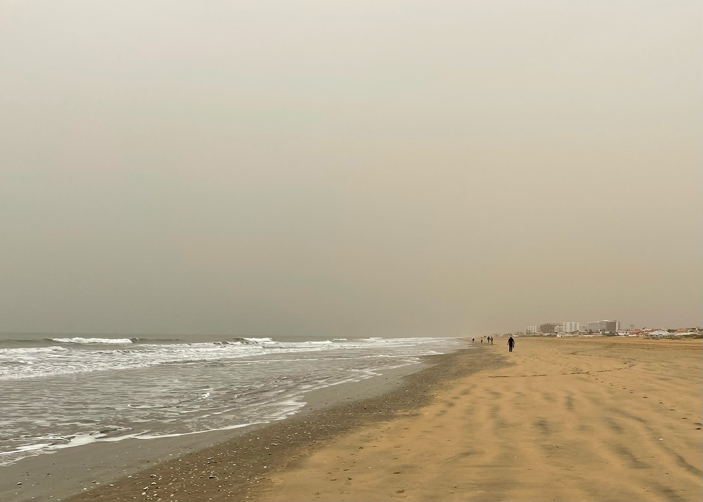
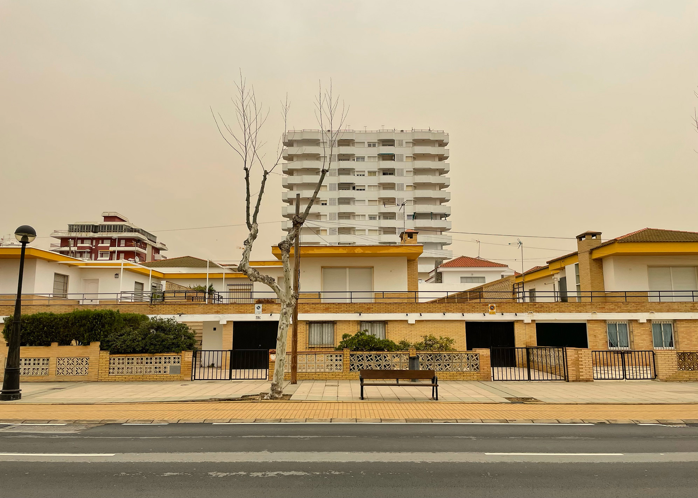
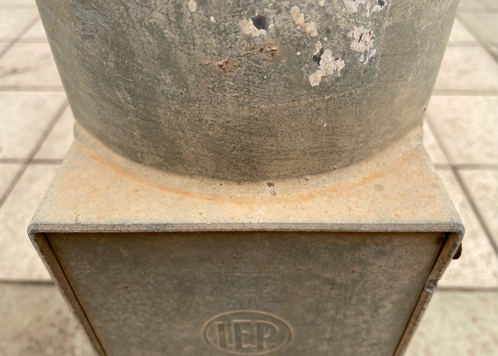
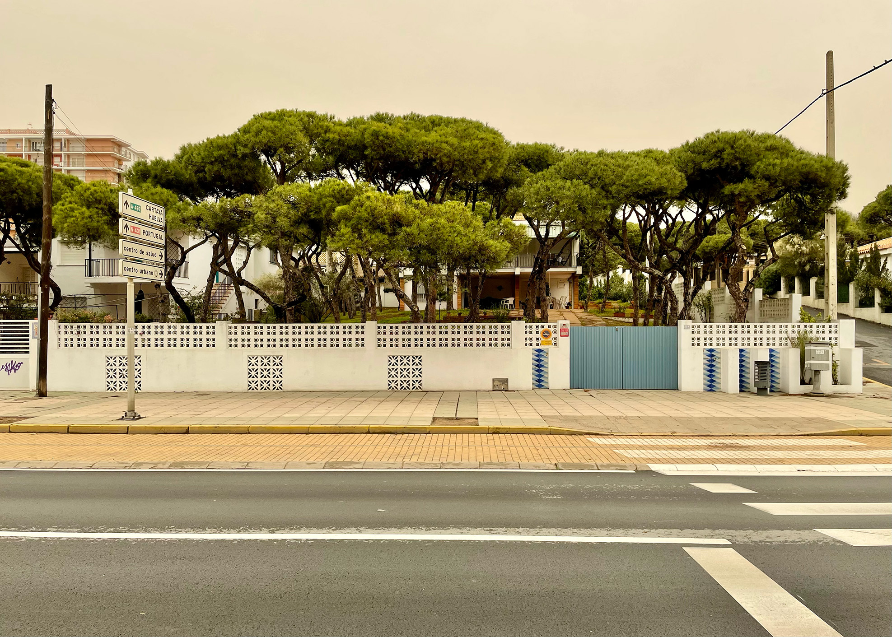
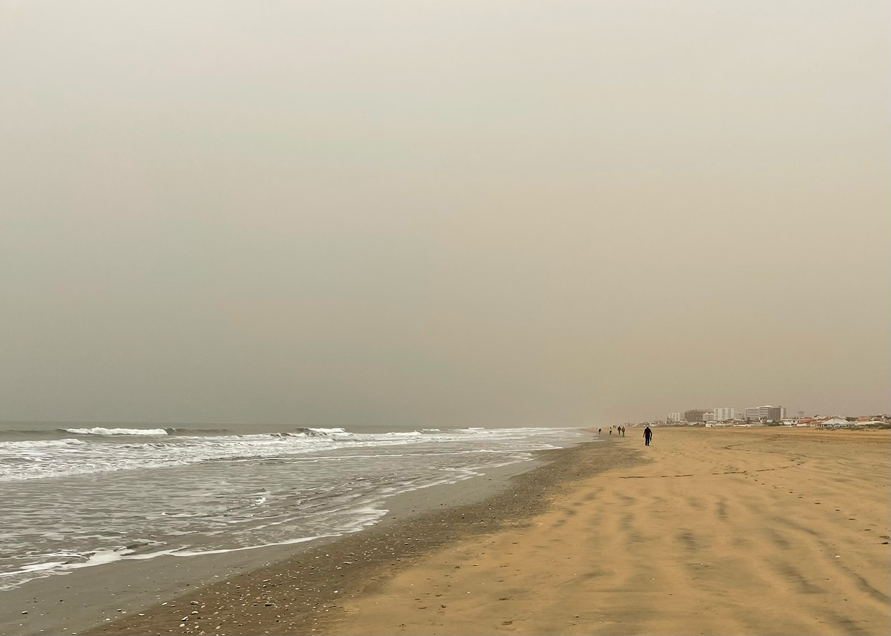
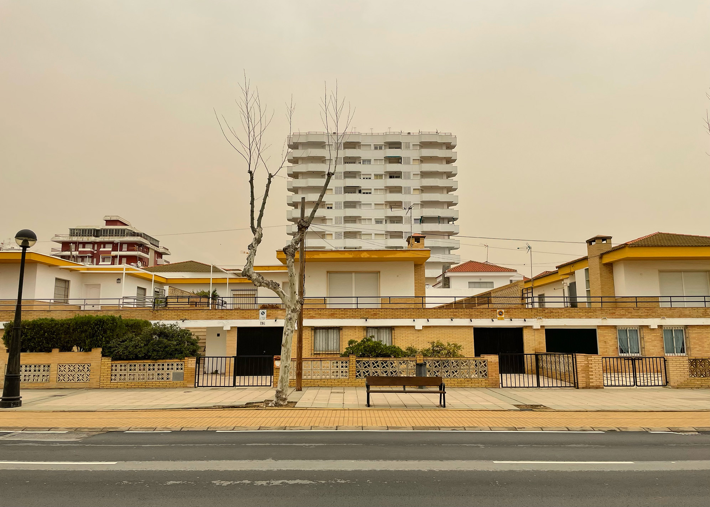

Saharan Dust
Creative research on weather, culture, and borders
"When dust from the Sahara Desert drifts en masse towards parts of mainland Europe, skies become saturated with ochre hues and surfaces require dusting." – Sabin and Jorge Olcina Cantos (2024)
 







"Satellite vision is typically coopted in portraying Saharan dust as an intrusion across geopolitical borders, which is embedded within postcolonial power relations and the territorialization of air. My critique highlights the importance of telling weather stories from underrepresented perspectives, especially given the disproportionate impacts of climate change and air pollution experienced in African cities where Saharan dust is known to mix with anthropogenic emissions." – in Sentio Journal (2024)
"Blowing over the scattered sand, I played with random patterns and excavations, in a process of embodying flows of matter and the agency of the weather from all directions." – in Sentio Journal (2024)
Saharan dust is a creative engagement with a weather event and form of air pollution that happens when particulate matter from the Sahara Desert is transported by winds to far off places, including Europe. My visual research documents traces of Saharan dust during a research visit to the climatology laboratory at the University of Alicante in February and March, 2022. The grainy quality of some of the photographs and the sepia tones reflect how the mineral dust transformed the appearance of atmospheres and surfaces.
I also developed processes for altering satellite images by bringing in other materials or projecting them in a curated setting. It was an inquiry into representation of weather as a power relation that usually goes unquestioned. I was inspired also by the way dust travels and swirls, so I speculated about drifting with dust beyond fixed narratives.
I documented the visual research in an article entitled "Imag(in)ing Saharan dust" published in Sentio (2024). I also co-authored an experimental article 'Weathering Saharan dust beyond the Spanish Mediterranean Basin: An interdisciplinary dialogue' (2023). This dialogue with climatologist Jorge Olcina Cantos problematises how weather stories of Saharan dust as a border intrusion are typically told from a Eurocentric perspective. I presented this ongoing research at Amsterdam University College in June 2024 (the slides are available here).

Sahara sand and Sahara dust depicted on the same scale. Source: Jan 1959, Wikimedia Commons.